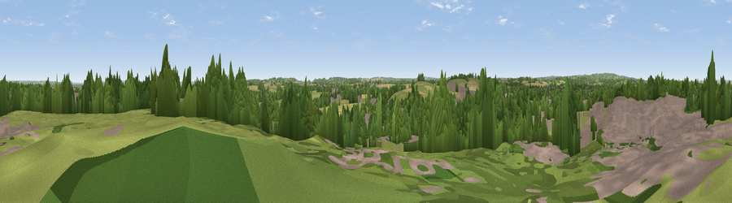

Viewpoint near Lichfield
#41584 in England · top 74% of its area beats it · near LichfieldWhere it is
The exact computed spot (SK 12425 08625). Click the marker for map links.
The view, rendered

A 360° render of this exact spot computed from the terrain model, tree cover and land cover — summer colours, afternoon light, calibrated against photographs of famous viewpoints. Real trees, hedges and buildings will differ in detail.
The panorama
Grey silhouette: terrain skyline in each direction (720 bearings, Earth curvature and refraction included). Dashed green: skyline with trees (+15 m) and buildings (+8 m) as obstacles. Blue strip: how far the ground is visible on each bearing.
Where the view opens
Wedge length = distance to the farthest visible ground on that bearing (vegetation-aware). Rings at 10, 25 and 50 km.
What fills the view
31% grassland · 29% woodland · 22% built-up · 17% cropland ·
Angular shares of the visible panorama (visual magnitude), not map area. Landscape diversity 0.61 (0–1 Shannon).
Key numbers
More beautiful places nearby
The staircase of upgrades: each row has a higher view potential than everything closer. Driving times are estimates from straight-line distance, calibrated against real road routing — check an actual route before setting out.
| Place | Direction | Drive | Score |
|---|---|---|---|
| Viewpoint near Lichfield | SSW · 1 km | ~4 min | 46.9 |
| Viewpoint near Hopwas | SSE · 6 km | ~13 min | 53.0 |
| Viewpoint near Mile Oak | SSE · 7 km | ~14 min | 55.1 |
| Viewpoint near Upper Longdon | NW · 10 km | ~19 min | 55.9 |
| Wimblebury Hill | WNW · 10 km | ~20 min | 60.9 |
| Viewpoint near Streetly | SSW · 13 km | ~23 min | 69.5 |
| Viewpoint near Whitwick | ENE · 33 km | ~51 min | 71.2 |
| Viewpoint near Clent | SW · 34 km | ~52 min | 73.8 |
52.67519, -1.81767 · source: screening · position refined by local search. Computed location — check access rights before visiting.